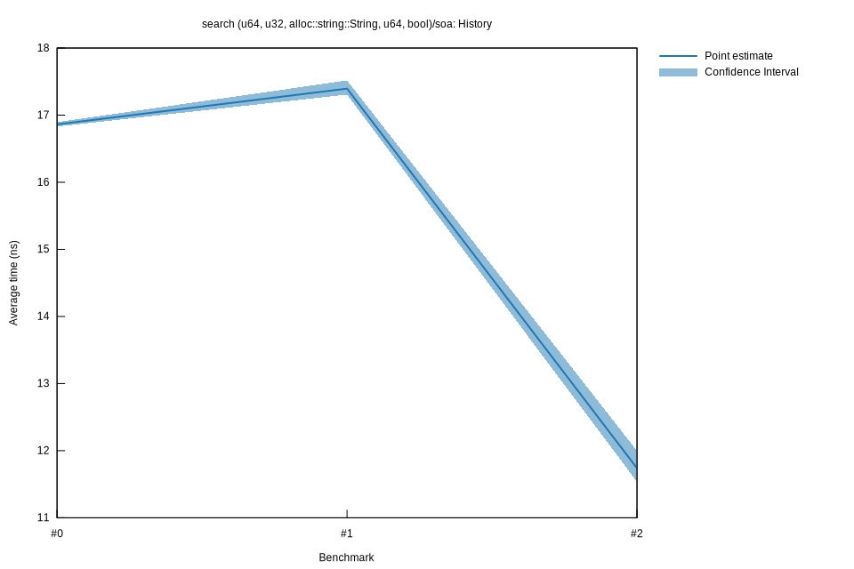

# 22023-02-24T22:41:56+01:00
|
Lower Bound |
Estimate |
Upper Bound |
| Value: |
11.54ns |
11.74ns |
12.00ns |
| Throughput: |
86.69Melem/s |
85.18Melem/s |
83.35Melem/s |
| Change in Value: |
-34.810% |
-32.514% |
-30.014% |
| Change in Throughput: |
+53.398% |
+48.179% |
+42.886% |
No change in performance detected.
# 12023-02-24T16:27:22+01:00
|
Lower Bound |
Estimate |
Upper Bound |
| Value: |
17.31ns |
17.40ns |
17.52ns |
| Throughput: |
57.78Melem/s |
57.49Melem/s |
57.09Melem/s |
| Change in Value: |
+1.4204% |
+3.1906% |
+5.0981% |
| Change in Throughput: |
-1.4005% |
-3.0919% |
-4.8508% |
No change in performance detected.
# 02023-02-24T15:56:02+01:00
|
Lower Bound |
Estimate |
Upper Bound |
| Value: |
16.83ns |
16.86ns |
16.90ns |
| Throughput: |
59.42Melem/s |
59.30Melem/s |
59.19Melem/s |